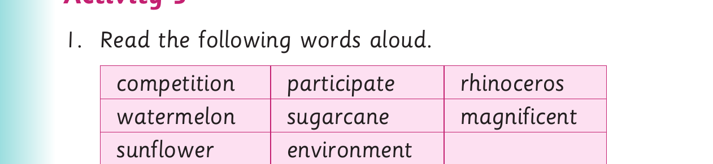
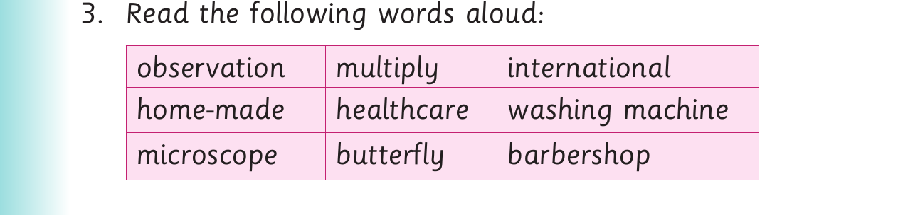

Reading long words - Activity 3
Activity 3

1. Read the following words aloud. competition participate rhinoceros watermelon sugarcane magnificent sunflower environment
2. Read the following sentences aloud: (a) Our school will participate in the sports competitions. (b) Sugar comes from sugarcane. (c) Sunflower produces cooking oil. (d) Watermelon is a delicious fruit. (e) We must protect our environment from destruction. (f) This is a magnificent building.

3. Read the following words aloud: observation multiply international home-made healthcare washing machine microscope butterfly barbershop